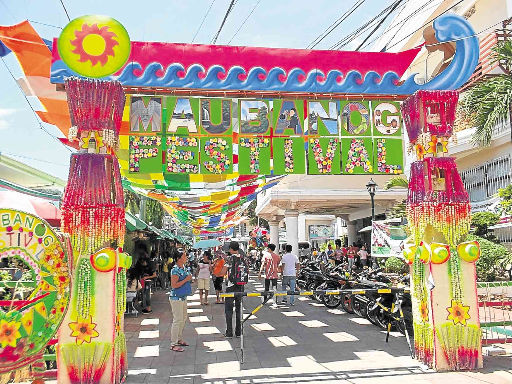

Bisabis Falls
A refreshing nature stop for travelers looking for a waterfall experience in Mauban. It is best for photos, quiet walks, and a more adventurous side trip.


Fresh-air stops for visitors who want greenery, waterfalls, town spaces, and slower moments around Mauban.
A refreshing nature stop for travelers looking for a waterfall experience in Mauban. It is best for photos, quiet walks, and a more adventurous side trip.
A scenic place to slow down, enjoy fresh air, and take landscape photos. This stop works well for visitors who prefer calm views over crowded areas.

A local gathering area during events and fiestas. It is a good stop for seeing the community side of Mauban and nearby town activity.
Bring water, extra clothes, sun protection, comfortable footwear, and a waterproof bag if your route includes waterfalls or rainy weather.
Morning visits are best for cooler weather and better light for photos. Town spaces are livelier during local events and fiesta season.
Respect local rules, avoid leaving trash, and ask for local guidance when visiting natural areas that may require walking or transport arrangements.